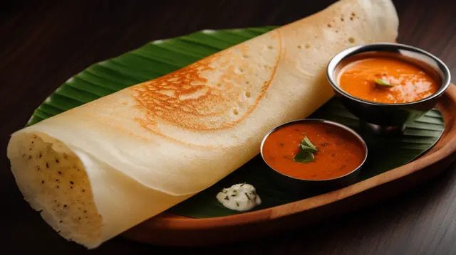
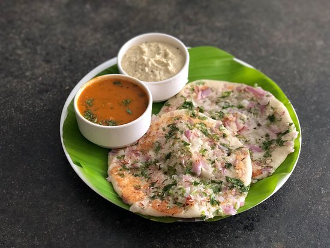

|  Get Dosa @ RS.70 |  Get Idly @ RS.30 Get Idly @ RS.30 |
 Get Vada @ RS.50 Get Vada @ RS.50 |
 Get Mysore bonda @ RS.50 Get Mysore bonda @ RS.50 |
 Get Chapati @ RS.80 Get Chapati @ RS.80 |
 Get Uthapam @ RS.40 |
𝓕𝓻𝓸𝓶 𝓟𝓪𝓼𝓼𝓲𝓸𝓷 𝓽𝓸 𝓟𝓵𝓪𝓽𝓮𝓼: 𝓣𝓱𝓮 𝓢𝓽𝓸𝓻𝔂 𝓸𝓯 𝓜𝔂𝓻𝓪 𝓕𝓸𝓸𝓭𝓼
𝐼𝓃 𝒶 𝓈𝓂𝒶𝓁𝓁 𝓀𝒾𝓉𝒸𝒽𝑒𝓃, 𝓃𝑒𝓈𝓉𝓁𝑒𝒹 𝒾𝓃 𝒶 𝒷𝓊𝓈𝓉𝓁𝒾𝓃𝑔 𝒸𝒾𝓉𝓎, 𝐼 𝑔𝓇𝑒𝓌 𝓊𝓅 𝓌𝒶𝓉𝒸𝒽𝒾𝓃𝑔 𝓂𝓎 𝑔𝓇𝒶𝓃𝒹𝓂𝑜𝓉𝒽𝑒𝓇 𝓅𝓇𝑒𝓅𝒶𝓇𝑒 𝓉𝒽𝑒 𝓂𝑜𝓈𝓉 𝒹𝑒𝓁𝒾𝑔𝒽𝓉𝒻𝓊𝓁 𝒷𝓇𝑒𝒶𝓀𝒻𝒶𝓈𝓉𝓈. 𝐸𝒶𝒸𝒽 𝓂𝑜𝓇𝓃𝒾𝓃𝑔 𝓌𝒶𝓈 𝒶 𝓃𝑒𝓌 𝒶𝒹𝓋𝑒𝓃𝓉𝓊𝓇𝑒—𝒶 𝓈𝓎𝓂𝓅𝒽𝑜𝓃𝓎 𝑜𝒻 𝒻𝓁𝒶𝓋𝑜𝓇𝓈 𝓉𝒽𝒶𝓉 𝒷𝓇𝑜𝓊𝑔𝒽𝓉 𝓂𝓎 𝒻𝒶𝓂𝒾𝓁𝓎 𝓉𝑜𝑔𝑒𝓉𝒽𝑒𝓇. 𝑀𝓎 𝓁𝑜𝓋𝑒 𝒻𝑜𝓇 𝒷𝓇𝑒𝒶𝓀𝒻𝒶𝓈𝓉 𝓌𝒶𝓈 𝒷𝑜𝓇𝓃 𝒻𝓇𝑜𝓂 𝓉𝒽𝑒𝓈𝑒 𝒸𝒽𝑒𝓇𝒾𝓈𝒽𝑒𝒹 𝓂𝑜𝓂𝑒𝓃𝓉𝓈, 𝓌𝒽𝑒𝓇𝑒 𝒻𝑜𝑜𝒹 𝓌𝒶𝓈 𝓂𝑜𝓇𝑒 𝓉𝒽𝒶𝓃 𝒿𝓊𝓈𝓉 𝓈𝓊𝓈𝓉𝑒𝓃𝒶𝓃𝒸𝑒; 𝒾𝓉 𝓌𝒶𝓈 𝒶 𝓌𝒶𝓎 𝓉𝑜 𝒸𝑜𝓃𝓃𝑒𝒸𝓉, 𝓉𝑜 𝒸𝑒𝓁𝑒𝒷𝓇𝒶𝓉𝑒, 𝒶𝓃𝒹 𝓉𝑜 𝓃𝓊𝓇𝓉𝓊𝓇𝑒. 𝒜𝓈 𝐼 𝑔𝓇𝑒𝓌 𝑜𝓁𝒹𝑒𝓇, 𝐼 𝓃𝑜𝓉𝒾𝒸𝑒𝒹 𝒶 𝑔𝒶𝓅 𝒾𝓃 𝓉𝒽𝑒 𝓂𝒶𝓇𝓀𝑒𝓉—𝒷𝓊𝓈𝓎 𝓂𝑜𝓇𝓃𝒾𝓃𝑔𝓈 𝑜𝒻𝓉𝑒𝓃 𝓂𝑒𝒶𝓃𝓉 𝓈𝓀𝒾𝓅𝓅𝑒𝒹 𝒷𝓇𝑒𝒶𝓀𝒻𝒶𝓈𝓉𝓈 𝑜𝓇 𝓊𝓃𝒽𝑒𝒶𝓁𝓉𝒽𝓎 𝒸𝒽𝑜𝒾𝒸𝑒𝓈. 𝐼 𝒹𝓇𝑒𝒶𝓂𝑒𝒹 𝑜𝒻 𝑜𝒻𝒻𝑒𝓇𝒾𝓃𝑔 𝓈𝑜𝓂𝑒𝓉𝒽𝒾𝓃𝑔 𝒹𝒾𝒻𝒻𝑒𝓇𝑒𝓃𝓉: 𝓌𝒽𝑜𝓁𝑒𝓈𝑜𝓂𝑒, 𝒹𝑒𝓁𝒾𝒸𝒾𝑜𝓊𝓈 𝒷𝓇𝑒𝒶𝓀𝒻𝒶𝓈𝓉 𝑜𝓅𝓉𝒾𝑜𝓃𝓈 𝓉𝒽𝒶𝓉 𝓅𝑒𝑜𝓅𝓁𝑒 𝒸𝑜𝓊𝓁𝒹 𝑒𝓃𝒿𝑜𝓎 𝑒𝓋𝑒𝓃 𝑜𝓃 𝓉𝒽𝑒𝒾𝓇 𝒷𝓊𝓈𝒾𝑒𝓈𝓉 𝒹𝒶𝓎𝓈. 𝒲𝒾𝓉𝒽 𝒶 𝓅𝒶𝓈𝓈𝒾𝑜𝓃 𝒻𝑜𝓇 𝒻𝑜𝑜𝒹 𝒶𝓃𝒹 𝒶 𝒽𝑒𝒶𝓇𝓉 𝒻𝓊𝓁𝓁 𝑜𝒻 𝒹𝑒𝓉𝑒𝓇𝓂𝒾𝓃𝒶𝓉𝒾𝑜𝓃, 𝐼 𝓉𝓊𝓇𝓃𝑒𝒹 𝒽𝑒𝓇 𝓀𝒾𝓉𝒸𝒽𝑒𝓃 𝒾𝓃𝓉𝑜 𝒶 𝓉𝑒𝓈𝓉 𝓁𝒶𝒷, 𝑒𝓍𝓅𝑒𝓇𝒾𝓂𝑒𝓃𝓉𝒾𝓃𝑔 𝓌𝒾𝓉𝒽 𝓇𝑒𝒸𝒾𝓅𝑒𝓈 𝓉𝒽𝒶𝓉 𝓌𝑒𝓇𝑒 𝒷𝑜𝓉𝒽 𝓃𝓊𝓉𝓇𝒾𝓉𝒾𝑜𝓊𝓈 𝒶𝓃𝒹 𝒹𝑒𝓁𝒾𝒸𝒾𝑜𝓊𝓈. 𝒜𝒻𝓉𝑒𝓇 𝓂𝑜𝓃𝓉𝒽𝓈 𝑜𝒻 𝓉𝓇𝒾𝒶𝓁𝓈, 𝑀𝓎𝓇𝒶 𝐹𝑜𝑜𝒹𝓈 𝓌𝒶𝓈 𝒷𝑜𝓇𝓃—𝒶 𝒷𝓇𝒶𝓃𝒹 𝓉𝒽𝒶𝓉 𝒷𝓇𝑜𝓊𝑔𝒽𝓉 𝓉𝒽𝑒 𝓌𝒶𝓇𝓂𝓉𝒽 𝑜𝒻 𝓂𝓎 𝑔𝓇𝒶𝓃𝒹𝓂𝑜𝓉𝒽𝑒𝓇'𝓈 𝓀𝒾𝓉𝒸𝒽𝑒𝓃 𝓉𝑜 𝓉𝒶𝒷𝓁𝑒𝓈 𝑒𝓋𝑒𝓇𝓎𝓌𝒽𝑒𝓇𝑒. 𝒲𝒽𝒶𝓉 𝓈𝓉𝒶𝓇𝓉𝑒𝒹 𝒶𝓈 𝒶 𝓈𝓂𝒶𝓁𝓁 𝒾𝒹𝑒𝒶 𝒷𝓁𝑜𝓈𝓈𝑜𝓂𝑒𝒹 𝒾𝓃𝓉𝑜 𝒶 𝓉𝒽𝓇𝒾𝓋𝒾𝓃𝑔 𝒷𝓊𝓈𝒾𝓃𝑒𝓈𝓈, 𝓇𝑜𝑜𝓉𝑒𝒹 𝒾𝓃 𝓉𝒽𝑒 𝒷𝑒𝓁𝒾𝑒𝒻 𝓉𝒽𝒶𝓉 𝑒𝓋𝑒𝓇𝓎𝑜𝓃𝑒 𝒹𝑒𝓈𝑒𝓇𝓋𝑒𝓈 𝒶 𝑔𝑜𝑜𝒹 𝓈𝓉𝒶𝓇𝓉 𝓉𝑜 𝓉𝒽𝑒𝒾𝓇 𝒹𝒶𝓎 _𝕗𝕠𝕦𝕟𝕕𝕖𝕣,𝕄𝕪𝕣𝕒 𝕗𝕠𝕠𝕕𝕤.
Sign up for our website and receive 10% off your first order